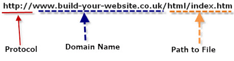

## Web Dev & Coding Basics! </br> Presentation given by Ryan Shaw </br> Senior Software Engineer on the Platform Services team #### Key topics to be covered <div style="text-align: left;"> - Major topics of Web Dev (HTTP, HTML, CSS, JavaScript) </br> - Key topics in "programming languages" </br> - Resources for learning more </br> - Questions & Answers </div> --- ## Tooling used in this presentation </div> <div style="text-align: left; font-size: 1.75rem"> - [VS Code](https://code.visualstudio.com/download) - [Git](https://git-scm.com/downloads) - [Github Desktop](https://desktop.github.com/download/) </div> --- ## Overview <img src="images/01-web-dev/overview.webp" style="background: white;"> --- ## What is a website? - From the perspective of a web developer, a website is simply a collection of files that are made available on the internet via a web server! - A web developer is responsible for understanding how to create and maintain those files to fulfill the purpose of the website. --- ## Http & Domains  <p class="fragment" style="text-align: left; font-size: 1.75rem;"> You can think of it as an addressbook for others to find the files of your website </p> --- ## HTML </div> <div style="text-align: left; font-size: 1.75rem"> - Hypertext Markup Language - Establishes the "structure" of a website </div> <p class="fragment" style="text-align: center; font-size: 1.75rem; color: cyan;"> demo </p> --- ## HTML - Important concepts - This is only the starting point with a focus on <span style="font-style: italic;">what</span> should be contained on the page. <img src="images/01-web-dev/html-anatomy.png" style="background: white;"> --- ## CSS <div style="text-align: left; font-size: 1.75rem"> - Cascading Style Sheet - Builds on the structure of an HTML file to determine how your web browser renders the page </div> --- ## CSS - syntax ```css selector { property1: value; property2: value; } ``` selector - a expression to reference html elements property / values - combinations --- ## CSS - selector example ```css /* this is an example of an element / tag selector */ h1 { ... } /* this is an example of a class selector */ .btn { ... } /* this is an example of an id selector */ #save-button { ... } ``` --- ## JavaScript - The most commonly used language that defines the the <span style="font-style: italic;">functionality and behavior</span> of a website - Common behavior includes the following: - Manipulate values on the web page - Make additional web requests (send data to a server to save in a database) - Managing "client-side" logical operations - Is a "Programming" language, in contrast to how HTML is a "Markup" language --- ## JavaScript <p class="fragment" style="text-align: center; font-size: 1.75rem; color: cyan;"> demo </p> --- ## Concept check! - What are the differences between HTML, CSS, and JavaScript in terms of what they are responsible for? --- ## Exercise - Let's use developer tools to look at public websites like a web developer! - [Everybody get up](https://www.spacejam.com/1996/) --- ## Server-side concepts - There are key parts of our websites that we can't make available to the open internet. There are times were we need a trusted, centralized source for handling sensitive operations. - This includes Authorization, database read/write commands, Controlled access to resources, etc </br> - [Additional reading](https://developer.mozilla.org/en-US/docs/Learn/Server-side/First_steps/Introduction) --- ## Differences in programming languages - In what situations would you pick JavaScript over C#, or C++, or Java, etc? - Understanding what tooling is available to be leveraged in those languages. --- ## (Optional) C# Coding Basics - [Basic C# Tutorials](https://learn.microsoft.com/en-us/dotnet/csharp/tour-of-csharp/tutorials/) --- ## In Summary - A web developer is responsible for broadly knowing the purpose of these tools, as well as when is the appropriate time to utilize each of them. - There are many routes one can go in this career as many of these tools can get very specific and nuanced --- ## Where do I go next? - [Front-end roadmap](https://roadmap.sh/frontend) - [Back-end roadmap](https://roadmap.sh/backend) --- ## Additional resources <div style="text-align: left; font-size: 1.75rem"> - [W3 Schools](https://www.w3schools.com/html/) - [MDN Learn web dev](https://developer.mozilla.org/en-US/docs/Learn) - [Additional C# resources](https://dotnet.microsoft.com/en-us/learn/csharp) - [Link to html / css / javascript demo code](https://github.com/RyanTheShaw/RyansExampleHtmlSite) </div> --- ## Questions